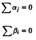
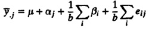
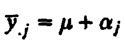
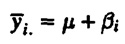
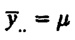
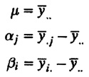

| Previous | Table of Contents | Next |
No amount of experimentation can ever prove me right; a single experiment can prove me wrong.
—Albert Einstein
A two-factor design is used when there are two parameters that are carefully controlled and varied to study their impact on the performance. For example, one would use a two-factor design to compare several processors using several workloads. In this case, processors are one factor and the workloads are another. In a full factorial design all combinations of processors and workloads will be experimented with. Another example of application of two-factor design is that of determining two configuration parameters, such as cache and memory sizes, number of disk drives and number of processors, and so on. It is assumed that the factors are categorical or they are being treated as such by the analyst. If the factors are quantitative, a regression model may be used instead.
A full factorial design with two factors A and B having a and b levels requires 10 ab experiments. In this chapter, we consider the case where each experiment is conducted only once. The design with replications will be considered in Chapter 22.
Most of the concepts presented in this chapter are extensions of those presented earlier in Chapter 20 on one-factor designs. It is assumed that you have already read that chapter.
The model for a two-factor design without replications is
yij = µ + αj + βi + eij
Here, yij is the observation in the experiment with the first factor A being at level j and the second factor B being at level i, µ is the mean response, αj is the effect of factor A at level j, βi is the effect of factor B at level i, and eij is the error term. The effects αj and βi are computed so that their sums are zero:

Notice that it is assumed that the effects of the two factors add and the errors are additive. An alternative to these assumptions will be discussed later in Section 21.7.
The procedure to develop expressions for effects is similar to that used earlier in Section 20.2 for one-factor design. The observations are assumed to be arranged in a two-dimensional matrix of b rows and a columns such that the (i,j)th entry yij corresponds to the response in the experiment in which factor A is at level j and factor B is at level i. In other words, the columns correspond to the levels of A and rows correspond to levels of the factor B.
The values of model parameters µ, αj’s, and βi’s are computed such that the error has a zero mean. This means that the sum of error terms along each column and along each row is zero.
Averaging the jth column produces

Since the last two terms are zero, we have

Similarly, averaging along rows produces

Averaging all observations produces

| TABLE 21.1 Measured Processor Times for the Cache Comparison Study | |||
|---|---|---|---|
| Workload | Two Caches | One Cache | No Cache |
| ASM | 54.0 | 55.0 | 106.0 |
| TECO | 60.0 | 60.0 | 123.0 |
| SIEVE | 43.0 | 43.0 | 120.0 |
| DHRYSTONE | 49.0 | 52.0 | 111.0 |
| SORT | 49.0 | 50.0 | 108.0 |
Thus, the estimates of the model parameters are

Computation of parameters can be easily carried out using a tabular arrangement of data as illustrated by the following example.
| TABLE 21.2 Computation of Effects for the Cache Comparison Study | ||||||
|---|---|---|---|---|---|---|
| Row | Row | Row | ||||
| Workload | Two Caches | One Cache | No Cache | Sum | Mean | Effect |
| ASM | 54.0 | 55.0 | 126.0 | 215.0 | 71.7 | -0.5 |
| TECO | 60.0 | 60.0 | 123.0 | 243.0 | 81.0 | 8.8 |
| SIEVE | 43.0 | 43.0 | 120.0 | 206.0 | 68.7 | -3.5 |
| DHRYSTONE | 49.0 | 52.0 | 111.0 | 212.0 | 70.7 | -1.5 |
| SORT | 49.0 | 50.0 | 128.0 | 207.0 | 69.0 | -3.2 |
| Column sum | 255.0 | 260.0 | 568.0 | 1283.0 | ||
| Column mean | 51.0 | 52.0 | 113.6 | 72.2 | ||
| Column effect | -21.2 | -20.2 | 41.4 | |||
| Previous | Table of Contents | Next |